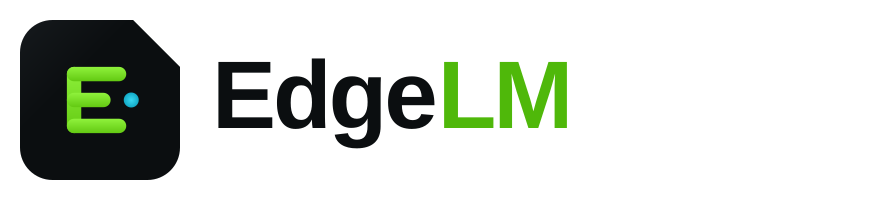
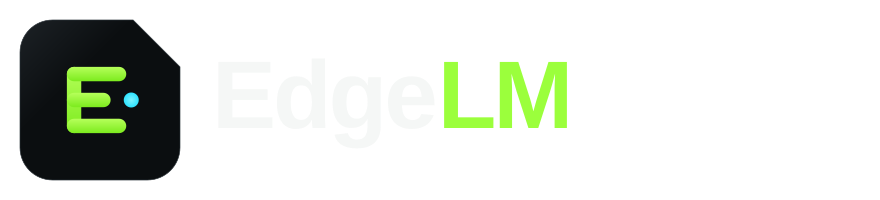
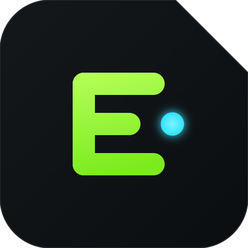
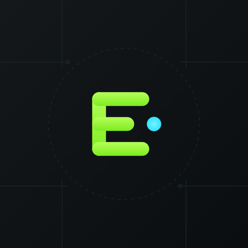

EdgeLM is a local AI runtime for Android — the missing system service that lets any app run LLMs, vision, speech, and embeddings on-device through a secure, OpenAI-compatible local API. Zero cloud by default.
EdgeLM isn't an AI app. It's the runtime everything else is built on — a shared, system-level service that makes local intelligence a native capability of the phone.
To make on-device AI a native capability of every mobile platform — so any developer can ship intelligent, private, offline-first apps without shipping an inference engine or renting a cloud GPU.
A world where AI runs where your data lives. Billions of devices each running a shared local runtime — the "AI operating system" layer that sits between silicon and software, the way the graphics stack sits under every game.
The device is the datacenter. Cloud is an opt-in fallback, never a requirement.
Data never leaves the device unless the user says so. Privacy isn't a setting — it's the default topology.
We build the boring, load-bearing layer so others build the magic on top.
Every millisecond and milliamp counts. On mobile, efficiency is the product.
OpenAI-compatible, MCP-native, no lock-in. Interoperability earns trust.
If it takes more than five minutes to first token, we failed.
Precise, calm, and quietly confident — the engineer in the room who has already solved the hard part. Technical without being cold. Premium without being flashy. EdgeLM behaves like a system primitive: dependable, invisible, and everywhere.
Clear, declarative, and benchmark-backed. Short sentences. Verbs over adjectives. We show numbers, not adjectives; code, not claims. We never hype — we demonstrate. Think Vercel's clarity, Linear's restraint, Stripe's precision.
For Android developers building AI-powered apps, EdgeLM is the on-device AI runtime that runs LLMs, vision, and speech models locally through a secure, OpenAI-compatible API — so unlike cloud APIs or embedded inference libraries, apps get private, offline, zero-cost intelligence without shipping their own engine.
EdgeLM is the Android AI Runtime — a shared, on-device platform that lets any app run AI models locally through a secure OpenAI-compatible API.
Every app wants AI, but each one ships its own bloated inference engine or pipes user data to a cloud that costs money and leaks privacy. EdgeLM is a system-level runtime for Android — install once, and every app can call local LLMs, vision, speech, and embeddings through a familiar OpenAI-compatible API. It's Docker + Ollama for the phone: one shared runtime, GPU-accelerated, battery-aware, private by default. Developers ship intelligence without shipping infrastructure.
The last decade sent your data to the cloud. The next one brings intelligence back home.
Your phone is a supercomputer. It has a neural engine, a GPU, and gigabytes of memory that sit idle while a server farm on another continent answers questions about your own life — slowly, expensively, and by permission.
We think that's backwards. Intelligence should run where your data already is: on the device, in your pocket, under your control. Not because the cloud is evil, but because local is faster, cheaper, more private, and it works on a plane.
But building on-device AI today is brutal. Every team reinvents the same inference stack, fights the same memory limits, drains the same battery, and ships the same 400MB engine — five times, in five apps, on one phone.
So we're building the layer that should have existed already: a shared runtime that belongs to the platform, not the app. Install it once. Any app can use it. Models are downloaded once and shared. The GPU is scheduled fairly. The battery is respected. Permissions are enforced. And the API is one every developer already knows.
EdgeLM is the missing system service for the age of local AI. Run AI. Anywhere.
Short answer: yes — for a developer-infrastructure brand. It's technically credible, self-describing, and ownable. It has one real weakness we address deliberately.
| Criterion | Verdict | Notes |
|---|---|---|
| Memorability | Strong | Two syllables of meaning: "Edge" (on-device / edge compute) + "LM" (language models). Sticks after one read. |
| Technical credibility | Very strong | "Edge" is the accepted term for on-device compute; "LM" signals the model era. Reads as serious infra to engineers. |
| Scalability | Good | "LM" risks sounding text-only, but we run vision/speech/embeddings too. Position "LM" as "Local Models," not "Language Models," to future-proof. |
| Consumer friendliness | Medium | Slightly technical for pure consumers — but EdgeLM is a developer/infra brand first, so this is acceptable and on-strategy. |
| Global pronunciation | Good | "Edge-L-M" is unambiguous across languages. No silent letters, no locale traps. |
| Future-proofing | Good | Reframe "LM" as "Local Models" and the name survives beyond the LLM wave. Domain/handle availability should be verified early. |
Recommendation: Keep EdgeLM as the primary name. Officially gloss it as "Edge · Local Models" so it scales past text. Lock edgelm.dev / edgelm.ai and the @edgelm handles.
Dev-native metaphor
Premium, on-device
"No mo(re) cloud"
Small core runtime
Silicon-close
System core
Literal + clear
Foundation layer
Infra connotation
AI-OS framing
Local gateway
System-service vibe
Model hub angle
Unix daemon feel
"Local" + engine
Premium halo
Builder energy
Edge daemon
Enterprise tone
Consumer-friendly
The mark is a rounded chip tile with a single clipped corner — the silicon-die "notch" that gives EdgeLM its edge. Inside sits an E built from a stack of layers (model → runtime → app), with a cyan spark marking the moment of on-device inference.



App icon

Adaptive (108dp, safe-zone)
Favicon (16–48px)
On light surface
The adaptive icon ships as separate foreground (glyph, kept inside the 66dp safe circle) and background (carbon gradient + circuit texture) layers so Android can mask it to any device shape. The favicon drops the spark and thickens strokes to stay crisp at 16px.
A dark-first design language inspired by Linear's restraint, Vercel's clarity, Raycast's polish, and Material 3's structure — engineered to feel like developer tooling, not a consumer app.
Signal Green is the hero — energy, "go," battery-efficient local compute. Volt Cyan is the secondary accent for links, sparks, and gradients. Neutrals (Obsidian → Carbon → Slate) build depth; Steel #7C8A93 and Fog #B9C4C9 handle muted and body text. Green is used sparingly — a highlighter, never a wall of paint.
12px radius, mono labels, 4px focus ring in green at 18% alpha.
Carbon fill, 1px Slate border, 16px radius. Hover lifts 2px and warms the border. No drop shadows in dark mode — depth comes from borders and elevation tint.
1.5px stroke, 24px grid, rounded joins. Geometric and monoline — Lucide-style. Diamonds (◆) and stacked layers recur as brand motifs.
// no models yet — pull one to begin) and a single primary action.The hero line is "Run AI. Anywhere." — everything else supports a channel, audience, or moment.
A single, fast, dark-first marketing page engineered to convert developers in one scroll — proof over promises.
$ install edgelm primary CTA + live token-streaming demo animation. Trust pills: on-device, GPU, private.localhost:1408/v1/chat/completions. Copy-to-clipboard. "Change one line from OpenAI."Because you shouldn't ship a 400MB inference engine, rent a GPU, or leak your users' data to add a chat box. One shared runtime does it for every app — private, offline, free.
Your app works in a tunnel, on a plane, in a dead zone. No network, no latency spikes, no rate limits, no outages that aren't yours.
Prompts and data never touch a server. That's not a policy — it's the architecture. Ship apps that are private by construction, and say so on your store page.
GPU/NPU-accelerated, battery-aware scheduling, shared model cache across apps. First token before the cloud finishes its TLS handshake.
If you can call OpenAI, you can call EdgeLM. Point your base URL at the local runtime and delete your API key — the request and streaming response shapes are identical.
# Migration: change one line. - base_url = "https://api.openai.com/v1" + base_url = "http://localhost:1408/v1" # EdgeLM local runtime curl http://localhost:1408/v1/chat/completions \ -H "Content-Type: application/json" \ -d '{"model":"llama-3.2-3b","messages":[{"role":"user","content":"Summarize this note offline."}],"stream":true}'
val edge = EdgeLM.client(context) // binds to the shared runtime edge.ensureModel("llama-3.2-3b") // pulled once, shared by all apps val reply = edge.chat { system("You are a helpful, offline assistant.") user(prompt) }.collectAsText() // streaming tokens, on-device
“We deleted our inference backend and our cloud bill in the same afternoon.” — Priya N., founder, NoteFox
“Our journaling app is now fully offline and private. Store rating jumped.” — Marcus L., Lead Android, Reflekt
“One API for LLM, vision, and speech. It felt like a system service, not an SDK.” — Dana W., Staff Eng, FieldOps
Win developers first, become a dependency, then let the ecosystem pull everyone else in. Standards are earned by being the path of least resistance.
Launch day: crisp 60s demo GIF, "OpenAI-compatible, 100% local," founder in comments all day. Aim #1 Product of the Day.
"Show HN: EdgeLM – a local, OpenAI-compatible AI runtime for Android." Lead with the technical honesty, benchmarks, and the open-source runtime.
r/LocalLLaMA, r/androiddev, r/MachineLearning. Real benchmarks, real repos, answer every hard question. No marketing voice.
Open-source runtime + SDK as the center of gravity. Great README, examples, "good first issue" labels. Stars are the scoreboard.
Build-in-public thread series: benchmark drops, model support, "cloud vs local" latency videos. Tag the local-AI community.
"Add offline AI to your Android app in 5 minutes" tutorials + deep-dive architecture videos. Partner with Android/AI creators.
Enterprise/privacy angle: on-device AI for regulated industries. Founder essays on the shift back from cloud.
Kotlin/Android Slacks, Droidcon talks, GDG meetups. Position EdgeLM as the missing Jetpack-style system service.
llama.cpp / GGUF / MLC circles, Hugging Face model cards linking "Run on Android with EdgeLM." Ride existing model momentum.
The standard-setter playbook: (1) be the easiest way to add AI to an Android app, (2) be OpenAI-compatible so migration is one line, (3) open-source the runtime so it's trustable and forkable, (4) build EdgeLM Hub so models "just work," (5) let shipped apps become the distribution — every app that depends on EdgeLM makes it more standard.
Trust in infrastructure requires openness; sustainability requires revenue. Open core resolves the tension.
| Model | Pros | Cons | Fit |
|---|---|---|---|
| Fully open source | Max trust & adoption; forkable; community moat | Hard to monetize; cloud/enterprise can free-ride | Good for the runtime only |
| Open core ✅ | Open runtime builds trust; paid Pro/Enterprise features fund it | Must draw the core/commercial line carefully | Recommended |
| Commercial / closed | Full control of monetization | Developers won't adopt closed infra; no trust | Wrong for a runtime |
| Enterprise-only | High ACV | No bottom-up adoption; no standard | Later stage layer |
| Dual license | Free for OSS, paid for commercial | Friction for indie devs; license confusion | Possible for SDK |
Recommendation: Runtime + core SDK under a permissive license (Apache-2.0) — free forever, the trust anchor and adoption engine. Monetize the layers around it: EdgeLM Hub Pro, Studio, Cloud fallback, enterprise management, and support. Open where trust matters, paid where value concentrates.
Others give you an engine or a library. EdgeLM gives you a shared platform — a system service with an API, permissions, and a model store that every app draws from.
| Player | What it is | Gap EdgeLM fills |
|---|---|---|
| Ollama | Great local-model runner for desktop/servers | Not an Android system service; no shared multi-app runtime, permissions, or battery scheduling on mobile |
| llama.cpp | The inference engine (the metal) | A library each app must embed & maintain — EdgeLM makes it a shared OS service with an API |
| MLC LLM | Compiler-based on-device inference | Powerful but low-level per app; EdgeLM adds the platform, API, hub, and cross-app sharing |
| Google AI Edge | Google's on-device stack (MediaPipe/LiteRT) | Google-model-centric & fragmented; EdgeLM is model-agnostic, OpenAI-compatible, one runtime for all apps |
| Apple MLX | Apple-silicon ML framework | iOS/Mac only & framework-level; EdgeLM targets Android as a shared runtime + API, not just a framework |
Install once; every app uses it. Models downloaded once, not per app.
Migration is one line. No new mental model, no lock-in.
Permissions, GPU scheduling, battery-awareness — OS concerns handled for you.
Every product orbits the runtime — the free, open core that makes all the rest valuable.
The open-source, on-device engine + local API. The center of gravity. Free forever.
Android/Kotlin + REST clients. Streaming, tools, MCP, permissions. The developer front door.
Signed, optimized, device-matched model registry. "It just works" model pulls.
Desktop app to test prompts, benchmark, quantize, and package models for devices.
Optional overflow/fallback + fleet model distribution for teams. Local-first, cloud-when-asked.
Open leaderboard of model × device performance. The trusted numbers everyone cites.
Pull, run, profile, and package models from the terminal. Scriptable CI integration.
Bring the same runtime + API to Windows/Mac/Linux — write once, run on any edge.
Fleet management, policy, private model registry, SSO, audit, support SLAs.
Third-party models, plugins, and agents — a revenue-shared ecosystem on top of Hub.
How it fits together: Developers build with the SDK against the Runtime, pull models from the Hub, tune them in Studio, automate via CLI, trust the Benchmark numbers, extend the same runtime to Desktop, scale with Cloud and Enterprise, and monetize through the Marketplace. The open runtime is the gravity well; everything else is value on top.
Free runtime drives adoption; money comes from teams, scale, and the ecosystem — never from ads in the inference path.
Fleet management, private registry, SSO, audit, SLAs. The core ACV driver.
Premium/optimized/licensed models with revenue share on every pull.
Metered overflow when a device can't handle a model — local-first, cloud-billed.
Paid terms for closed-source/commercial embedding of premium components.
Pro tier: private models, higher Hub limits, Studio Pro, priority builds.
Agents, tools, and MCP integrations — revenue-shared with builders.
Privacy-preserving, on-device performance analytics for teams. Never user data.
On-prem model distribution, device fleet policy, compliance tooling.
"Built on EdgeLM" certification + partner enablement for agencies.
Principle: monetize the layers around the runtime, keep the inference path free and ad-free. Adoption is the moat; the moat funds itself through teams and the marketplace.
Single-app LLM inference, GGUF support, GPU acceleration, basic local API. Ship a demo app + benchmarks. Goal: "it actually runs, and it's fast."
Multi-app shared service, model store, streaming, permissions, Android SDK. Open-source the runtime. Goal: 5-minute integration, first external apps live.
Vision + speech + embeddings, tool calling, MCP, battery/thermal scheduling, EdgeLM Hub, stability + docs. Goal: production apps depend on it.
Full toolchain, model marketplace, plugins/agents, desktop runtime parity. Goal: EdgeLM is the default way to build on-device AI.
Private registries, SSO, audit, SLAs, Cloud fallback, on-prem distribution. Goal: regulated + large orgs standardize on EdgeLM.
Cross-platform (Android, desktop, embedded/IoT, automotive, wearables), agent orchestration, on-device fine-tuning. Goal: EdgeLM is the standard runtime for local AI, everywhere.